"Design for Food," the senior year thesis project of Molly Weckesser at Pratt Institute, is an analysis of the visual elements of food branding, advertising, and styling and how they affect the decisions that every person must make, which food to buy and eat.
The project began with "Milk Manifesto," a publication about making your own alternative milk. The publication provides ideology behind and recipes for making your own nut milk, considering aspects like time, money, and the environment.
Other publications within the project include "St. Patrick's Day for Cool People," a cookbook attempting to revitalize Irish recipes for the contemporary celebration, and "How to Make Lots and Lots of Money," a chaotic pitch deck presenting an analysis of food marketing on Instagram to household name brands.
To investigate the performance and ritual of eating, I created a dirty dishes dinnerware set using food scraps as a cyanotype printing positive, capturing the visual artifact of a good meal.
The final project is "Jell-O Shots," a photo book capturing food that is rendered inedible or has fallen out of favor. Photographs consist of found foodscapes of discarded meals, and compositions examining the Jell-O mold trend in the U.S. during the '50s and '60s.
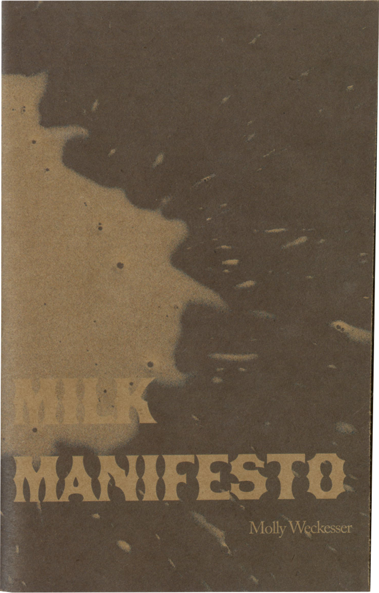
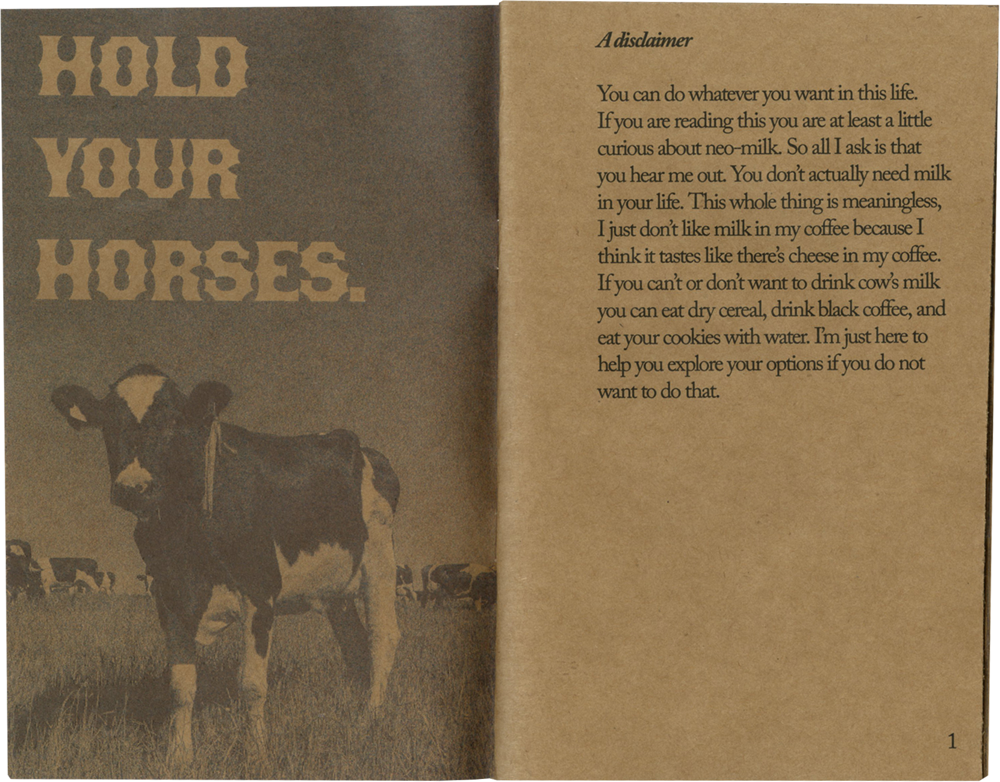
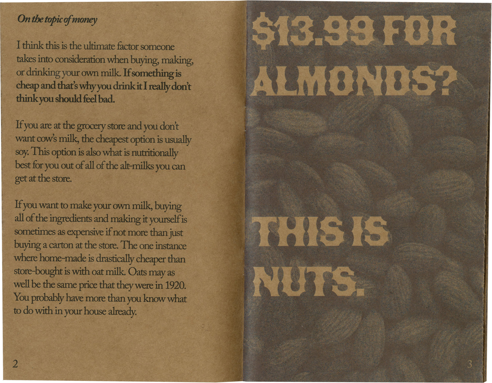
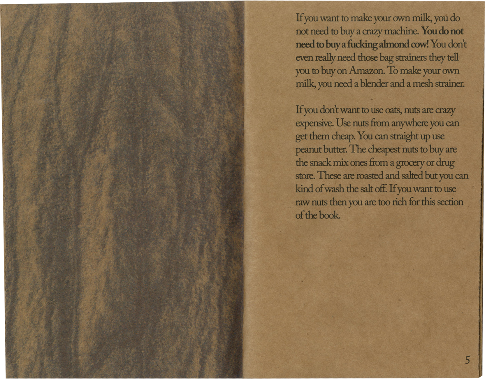
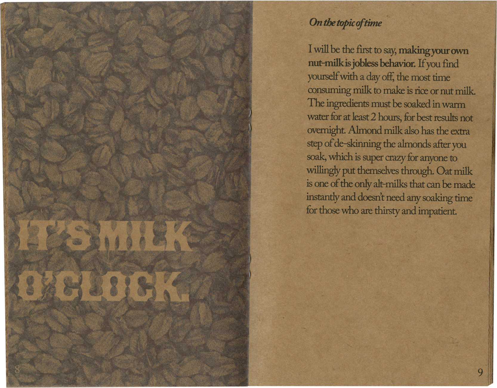
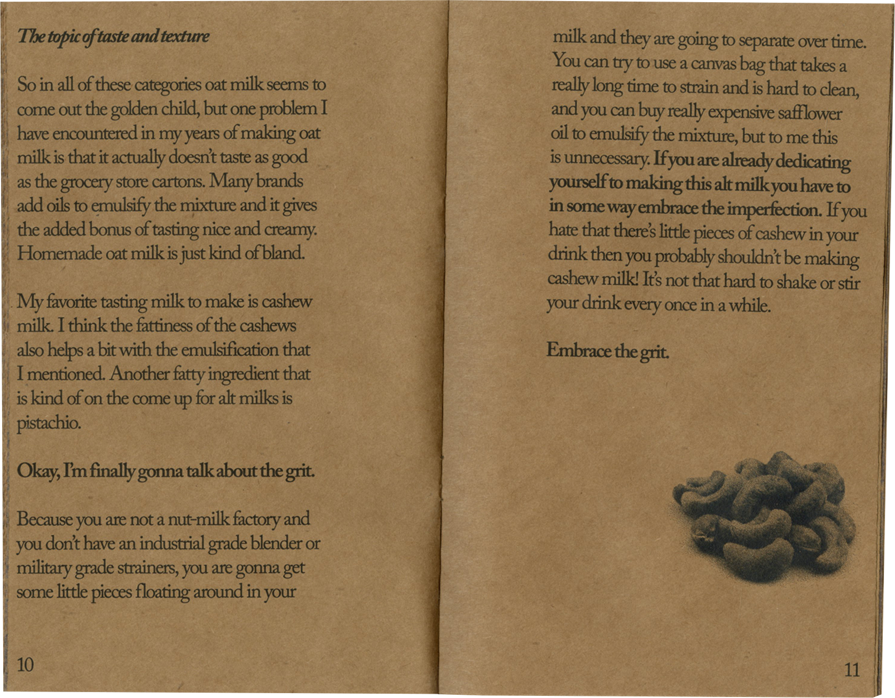
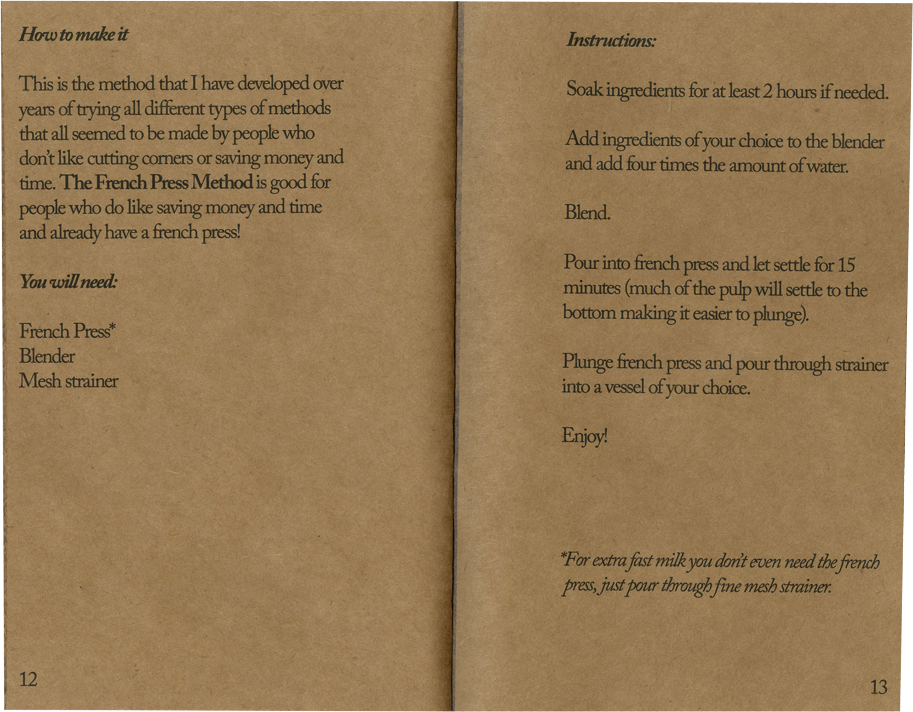
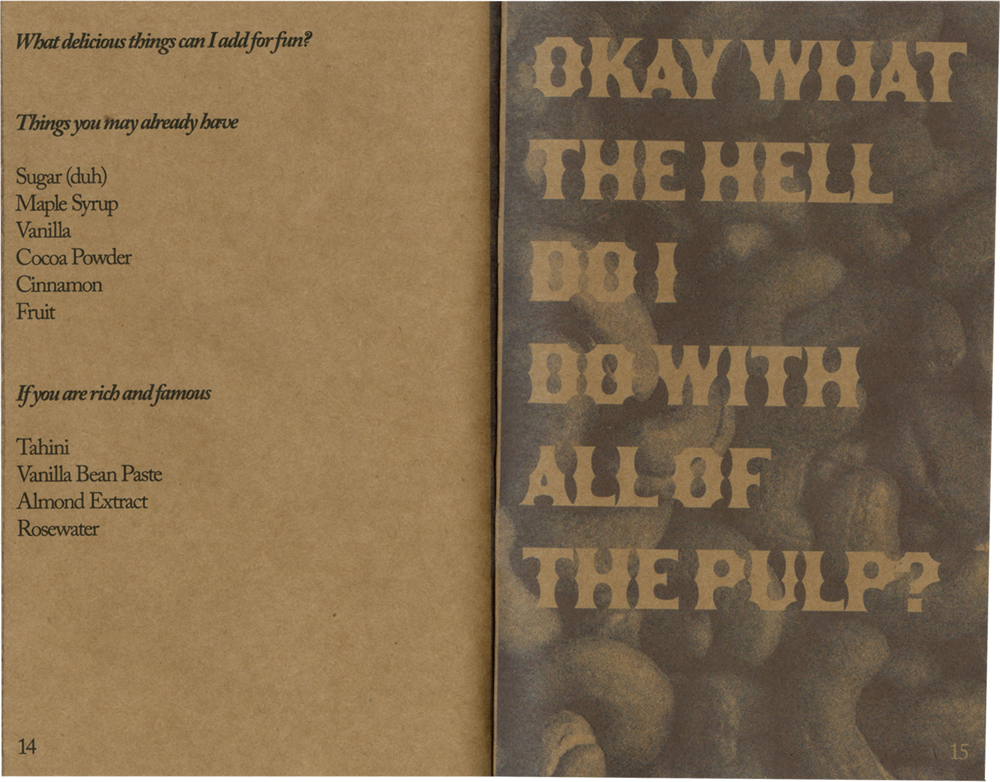
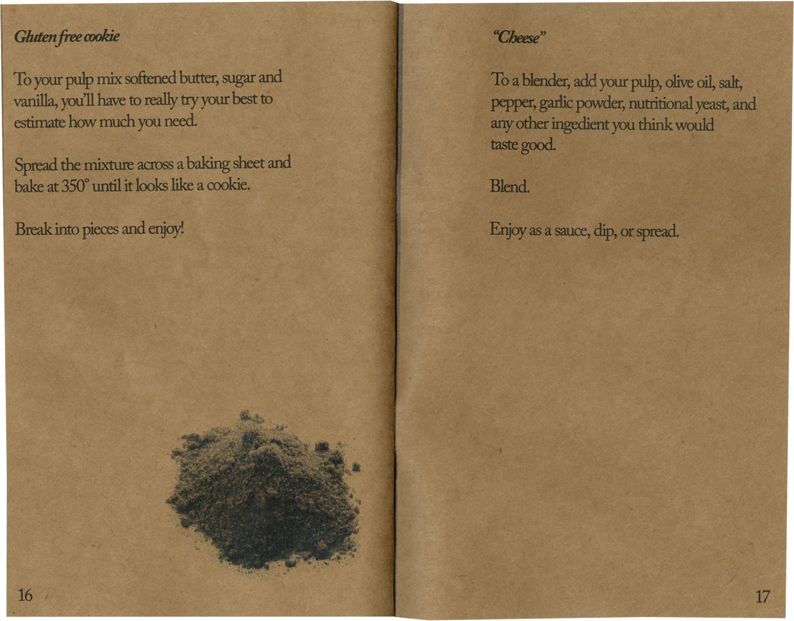
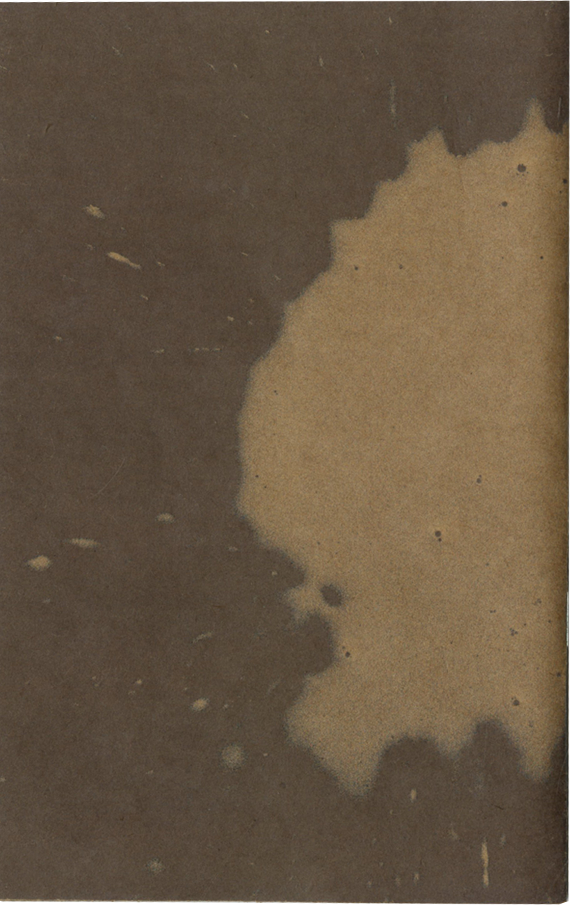
The starting point for this series of thesis works. "Milk Manifesto," is a collection of observations about making my own alternative milks. After years of design schooling in which many times I was assigned to write a manifesto of my own, I felt I didn't know much about anything to form a strong doctrine around. I looked within and realized that most everyone has strong opinions about food, and I had very strong opinions about vegan/vegetarian culture.
"St. Patrick's Day for Cool People" is a cookbook attempting to revitalize culinary enthusiasm for a holiday that gets a bad rap. I feel like culture is an unavoidable topic in the conversation of food, and yet my Irish culture didn't have much to contribute. Rather than restate the point that many have made before, "Culture and food are connected," I wanted to pe a little provocative in my recipe development and explore inauthenticity as it relates to diasporas such as that of the Irish-American. This cookbook also explores the idea of "cookbook as artist's book," including annotations througouht to convey the fluidity of each recipe.
Inspiration included the works of Dorothy Iannone and Martin Parr.
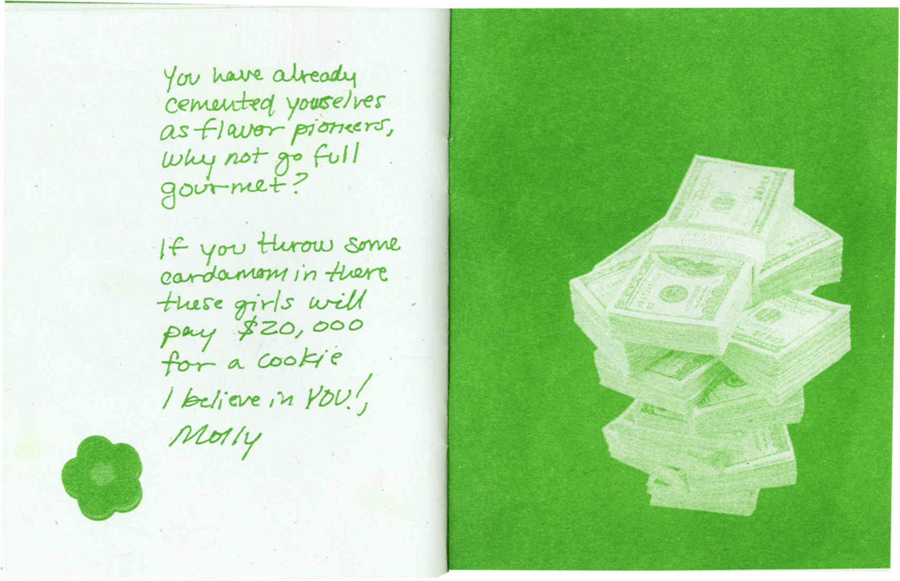
What started as a branding and packaging project, "How to Make Lot$ and Lot$ of Money" analyzes the shift in tone that food branding has gone through to the ever popular "millenial minimalist" style that direct to consumer food brands have made ever popular through social media marketing. This project was an aim to solve the problem that household name brands were facing, as their rebrands that emulated Instagram brands often fell flat and left consumers feeling betrayed. Instead of rebranding, I proposed entirely new product launches to these brands: Buddie, the cute beer for millenials from Bud Light; Frances, the hot sauce for people that spend too much money on t-shirts from Frank's Red Hot; and Roe Tea Co., the fancy Oreo for girlies who need a sweet treat. After realizing my proposals were much more rich with commentary, I reframed the project as a chaotic pitch-deck-zine.
Initial sketches and designs for Buddie, Frances, and Roe Tea Co.
A dinnerware set capturing the visual artifacts that come from eating. Foodscraps were used as positives in a cyanotype printing process. Ideas this set explores are cooking as performance, the table as a stage, and what happens to food once it is rendered "finished."
For this project I looked to Napoleon Dynamite, Allan Wexler tables, Micah Lexier Plates, and studios like Gohar World and Dusen Dusen.
"Jell-O Shots" is a photobook capturing absurdist Jell-O foodscapes analyzing the food trend popular in the United States in the '50s and '60s as a rich symbol for industrialization and gender roles. The Jell-O is paired with photos of food on the ground and proposes the question of what we do with food that has fallen out of favor.
I looked to food photographers I admired like Kyoko Takemura, Alistair Matthews, and Bobby Doherty.
From the archives of Alice Stephens (Gran).
In the ever-evolving landscape of consumer culture, the parallels between the rise of Direct-to-Consumer (DTC) brands on Instagram, particularly within the food and beverage industry, and the historical practice of food product recipe pamphlets in the 1950s and 60s are striking. This essay explores the similarities between these phenomena and argues that the lifestyle portrayed through making Jell-O salads, popularized in mid-20th-century America, has transformed into the selling of lifestyles by contemporary trendy brands such as Graza, Poppi, Chamberlain Coffee, and others.
The 1950s and 60s marked a period of significant transformation in American culture, particularly in the realm of consumerism. During this time, food corporations utilized recipe pamphlets as a means to not only promote their products but also to shape the lifestyles and culinary habits of American households. Christina Ward's "American Advertising c
Cookbooks: How Corporations Taught Us to Love Spam, Bananas, and Jell-O" delves into this phenomenon, highlighting how corporations like Jell-O and Campbell's effectively marketed their products through recipe pamphlets, thereby influencing the way Americans cooked and ate.
Ward notes, "These advertising cookbooks were cultural artifacts meant to sell an idealized lifestyle alongside the product itself, creating a sense of aspiration and desire among consumers." In these pamphlets, food corporations didn't merely offer recipes; they presented a vision of the idealized American home, complete with elaborate dishes that showcased not only culinary skill but also social status and familial harmony. She discusses Edward Barnays, credited for coming up with the term “public relations,” and how he used what he learned about the human psyche from his Uncle Sigmund Freud to mold the public’s perception of brands and connect them to specific lifestyles and desires. What these pamphlets were selling was not just products to follow recipes with, but a life that Americans were taught to idealize.
Fast forward to the present day, and we witness a similar phenomenon unfolding with the rise of DTC brands on platforms like Instagram. Brands such as Graza, Poppi, and Chamberlain Coffee leverage social media to not only promote their products but also to cultivate a lifestyle around their brand. Toby Shorin's essay "Life After Lifestyle" explores how contemporary brands are selling not just products but entire lifestyles and identities to consumers.
Shorin observes, "Brands today are not just selling products; they're selling an entire lifestyle, an identity that consumers can buy into." This echoes the strategies employed by food corporations in the 1950s and 60s, where the emphasis was not only on the product itself but also on the lifestyle and values associated with it.
One of the key similarities between the two phenomena is the emphasis on storytelling. Both recipe pamphlets and DTC brands utilize narratives to create an emotional connection with consumers. Whether it's through nostalgic imagery and family anecdotes in recipe pamphlets or through influencer endorsements and user-generated content on Instagram, storytelling plays a crucial role in shaping consumer perceptions and behaviors.
Shorin discusses that in the advent of social media marketing, branding a product may not even involve the product design itself. Because lifestyle aesthetics have become so sought after, brands often source their product from other manufacturers and spend the majority of their work on curating the lifestyle that it associates with. He Writes, “Products begin their life as an unbranded commodities made in foreign factories; they pass through a series of outsourced relationships —brand designers, content creators, and influencers—which construct a cultural identity for the good; in the final phase, the product ends up in a shoppable social media post. Each step, a service rendered that turns a commodity into a cultural item, turning the logic of all manufacturing into this: your brand, our products.” He begins his essay by telling the story of him observing someone from the grocery delivery brand Shipt working on a pitch deck and seeing them use phrases like “Shipt isn’t just a delivery service… It’s a super detailed, expert level, highly knowledgeable ideology.” One could say that the notion that a delivery service that is the same as any other to have existed for decades could be considered an “ideology” uses the same type of Bernaysian psychology as convincing the American public that olives or tuna belong in Jell-O.
Furthermore, both the recipe pamphlets of the past and DTC brands of today tap into broader cultural trends and values. In the 1950s, the emphasis on convenience and modernity led to the popularity of processed foods like Jell-O and canned soups. Similarly, contemporary DTC brands often align themselves with values such as health, sustainability, and authenticity, catering to the changing preferences of today's consumers.
However, it's essential to recognize the differences between these two phenomena as well. While recipe pamphlets were primarily a one-way communication channel from corporations to consumers, social media platforms like Instagram enable a more interactive and participatory relationship between brands and consumers. Arguably brands decades ago would have liked to tap into this curated and individualized sense of advertising, but consuming information was much less democratized. The individual nature of consuming ultra-specific targeted advertising today as a result of advancement in algorithm technology allows the lifestyle that these brands are marketing to be more participatory. This two-way communication allows DTC brands to not only promote their products but also engage with their audience directly, fostering a sense of community and belonging.
In conclusion, the parallels between the rise of DTC brands on Instagram and the historical practice of food product recipe pamphlets in the 1950s and 60s are evident. Both phenomena involve the selling of lifestyles to consumers, leveraging storytelling, cultural trends, and values to create emotional connections and shape consumer behaviors.
Shorin, Toby. “Life after Lifestyle.” Life After Lifestyle, 14 Sept. 2022, subpixel.space/entries/life-after-lifestyle/.
Ward, Christina. American Advertising Cookbooks: How Corporations Taught Us to Love Spam, Bananas, and Jell-O. Process Media, 2019.